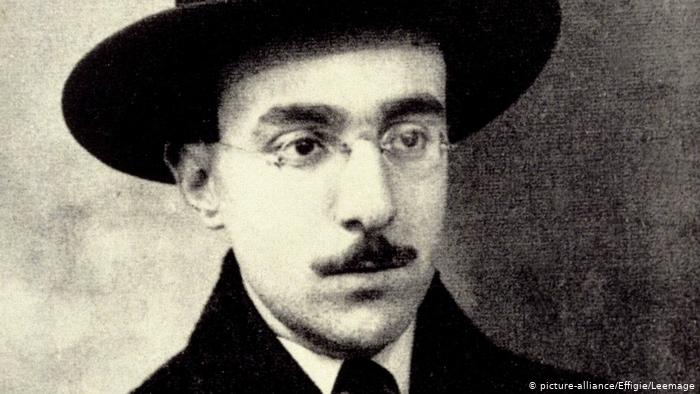
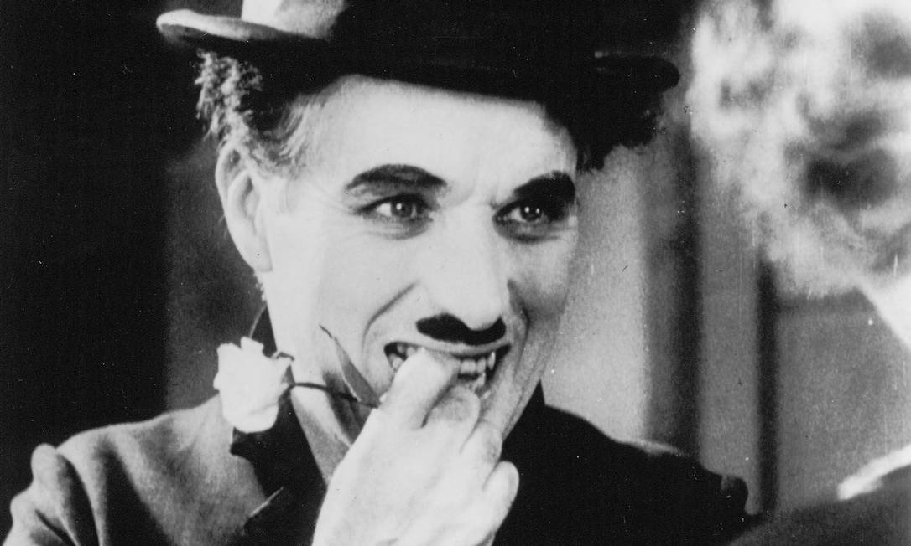
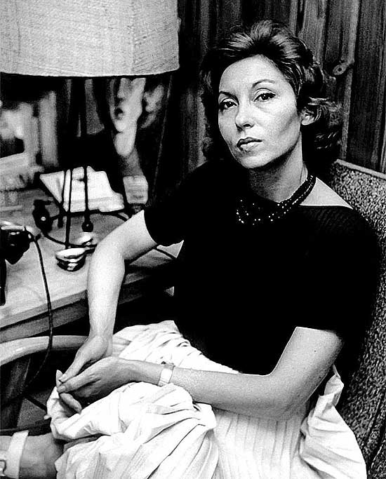

Fernando Pessoa
 Fernando Pessoa em 1914Fernando António Nogueira Pessoa (Lisboa, 13 de junho de 1888 — Lisboa, 30 de novembro de 1935) foi um poeta, filósofo, dramaturgo, ensaísta, tradutor, publicitário, astrólogo, inventor, empresário, correspondente comercial, crítico literário e comentarista político português.
Fernando Pessoa é o mais universal poeta português. Por ter sido educado na África do Sul, numa escola católica irlandesa, chegou a ter maior familiaridade com o idioma inglês do que com o português ao escrever os seus primeiros poemas nesse idioma. O crítico literário Harold Bloom considerou Pessoa como "Whitman renascido",[4] e o incluiu no seu cânone entre os 26 melhores escritores da civilização ocidental, não apenas da literatura portuguesa mas também da inglesa.Das quatro obras que publicou em vida, três são na língua inglesa. Fernando Pessoa traduziu várias obras em inglês (e.g., de Shakespeare e Edgar Allan Poe) para o português, e obras portuguesas (nomeadamente de António Botto[6] e Almada Negreiros) para o inglês.
Enquanto poeta, escreveu sob diversas personalidades – heterónimos, como Ricardo Reis, Álvaro de Campos e Alberto Caeiro –, sendo estes últimos objeto da maior parte dos estudos sobre a sua vida e obra. Robert Hass, poeta americano, diz: "outros modernistas como Yeats, Pound, Elliot inventaram máscaras pelas quais falavam ocasionalmente... Pessoa inventava poetas inteiros."Charles Chaplin
 Charles ChaplinCharles Spencer Chaplin KBE (Inglaterra, 16 de abril de 1889 — Corsier-sur-Vevey, 25 de dezembro de 1977) foi um ator, diretor, compositor, roteirista, produtor e editor britânico. Chaplin foi um dos atores da era do cinema mudo, notabilizado pelo uso de mímica e da comédia pastelão. É bastante conhecido pelos seus filmes O Imigrante, O Garoto, Em Busca do Ouro (este considerado por ele seu melhor filme), O Circo, Luzes da Cidade, Tempos Modernos, O Grande Ditador, Luzes da Ribalta, Um Rei em Nova Iorque e A Condessa de Hong Kong.
Seu principal e mais famoso personagem foi The Tramp, conhecido como Charlot na Europa e igualmente conhecido como Carlitos ou "O Vagabundo" no Brasil. Consiste em um andarilho pobretão que possui todas as maneiras refinadas e a dignidade de um cavalheiro (gentleman), usando um fraque preto esgarçado, calças e sapatos desgastados e mais largos que o seu número, um chapéu-coco ou cartola, uma bengala de bambu e - sua marca pessoal - um pequeno bigode-de-broxa. Foi também um talentoso jogador de xadrez e chegou a enfrentar o campeão estadunidense Samuel Reshevsky.Em 2008, em uma resenha do livro Chaplin: A Life, Martin Sieff escreve: "Chaplin não foi apenas 'grande', ele foi gigantesco. Em 1915, ele estourou um mundo dilacerado pela guerra trazendo o dom da comédia, risos e alívio enquanto ele próprio estava se dividindo ao meio pela Primeira Guerra Mundial. Durante os próximos 55 anos, através da Grande Depressão e da ascensão de Hitler, ele permaneceu no emprego. Ele foi maior do que qualquer um. É duvidoso que algum outro indivíduo tenha dado mais entretenimento, prazer e alívio para tantos seres humanos quando eles mais precisavam."
Por sua inigualável contribuição ao desenvolvimento da sétima arte, Chaplin é o mais homenageado cineasta de todos os tempos, sendo ainda em vida condecorado pelos governos britânico (Cavaleiro do Império Britânico) e francês (Légion d 'Honneur), pela Universidade de Oxford (Doutor Honoris Causa) e pela Academia de Artes e Ciências Cinematográficas dos Estados Unidos (Oscar especial pelo conjunto da obra, em 1972).Clarice Lispector
 Clarice Lispector, em uma entrevista.Clarice Lispector, nascida Chaya Pinkhasovna Lispector (em russo: Хая Пинхасовна Лиспектор; Chechelnyk, 10 de dezembro de 1920 — Rio de Janeiro, 9 de dezembro de 1977), foi uma escritora e jornalista ucraniana naturalizada brasileira. Autora de romances, contos e ensaios, é considerada uma das escritoras brasileiras mais importantes do século XX e a maior escritora judia desde Franz Kafka. Sua obra está repleta de cenas cotidianas simples e tramas psicológicas, reputando-se como uma de suas principais características a epifania de personagens comuns em momentos do cotidiano. Quanto às suas identidades nacional e regional, declarava-se brasileira e pernambucana.
Nasceu em uma família judaica russa que perdeu suas rendas com a Guerra Civil Russa e se viu obrigada a emigrar em decorrência da perseguição a judeus, à época, a qual resultou em diversos extermínios em massa. Especula-se que a mãe de Clarice teria sido violada por soldados russos durante a Primeira Guerra Mundial. A futura escritora chegou ao Brasil, ainda pequena, em 1922, com seus pais e duas irmãs. Clarice dizia não ter nenhuma ligação com a Ucrânia - "Naquela terra eu literalmente nunca pisei: fui carregada de colo" - e que sua verdadeira pátria era o Brasil. Inicialmente, a família passou um breve período em Maceió, até se mudar para o Recife, onde Clarice cresceu e onde, aos oito anos, perdeu a mãe. Aos quatorze anos de idade transferiu-se com o pai e as irmãs para o Rio de Janeiro, local em que a família se estabilizou e onde o seu pai viria a falecer, em 1940Estudou Direito na Universidade Federal do Rio de Janeiro, conhecida como Universidade do Brasil, apesar de, na época, ter demonstrado mais interesse pelo meio literário, no qual ingressou precocemente como tradutora, logo se consagrando como escritora, jornalista, contista e ensaísta, tornando-se uma das figuras mais influentes da Literatura brasileira e do Modernismo, sendo considerada uma das principais influências da nova geração de escritores brasileiros. É incluída pela crítica especializada entre os principais autores brasileiros do século XX.
Suas principais obras marcam cada período de sua carreira. Perto do Coração Selvagem foi seu livro de estreia, publicado quando Clarice tinha 24 anos de idade; Laços de Família, A Paixão segundo G.H., A Hora da Estrela e Um Sopro de Vida são seus últimos livros publicados. Faleceu em 1977, um dia antes de completar 57 anos, em decorrência de um câncer de ovário. Deixou dois filhos e uma vasta obra literária composta de romances, novelas, contos, crônicas, literatura infantil e entrevistas.